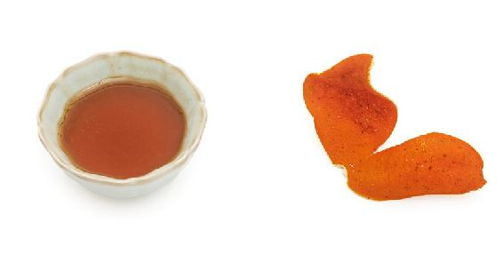
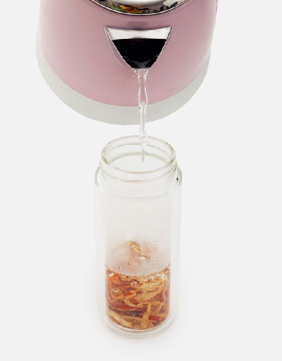
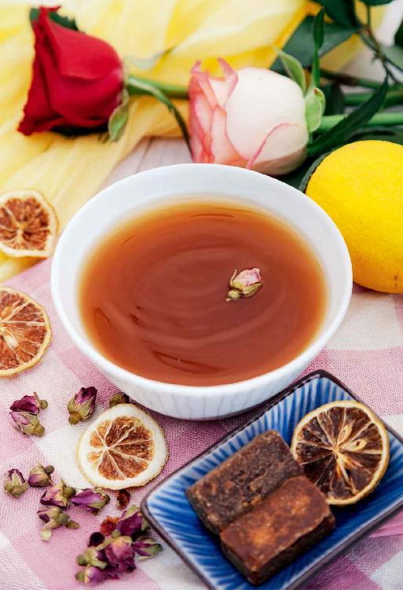
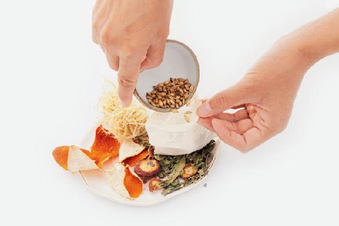
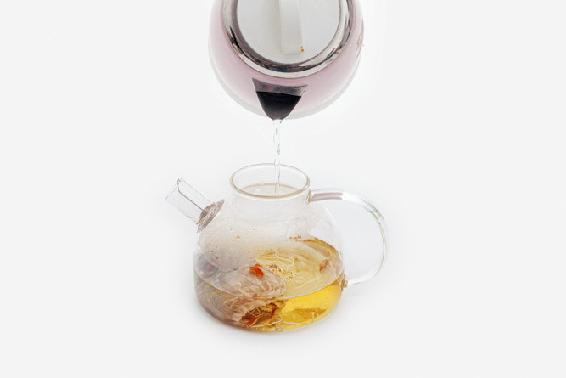
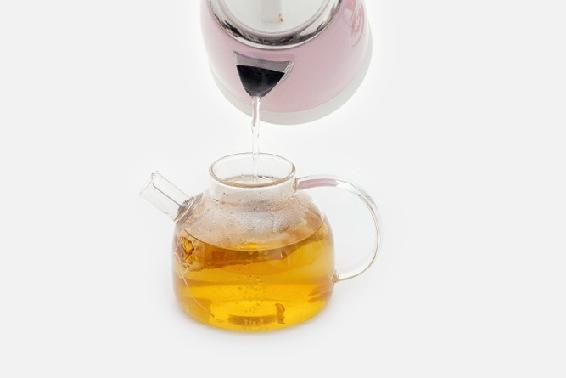

春天保养的重点是舒肝气、补脾胃。
五行中，肝是属木的。春天草木萌发，肝气也升发起来了，要给它一个疏泄的通道，不要压抑自己的心情，要尽量做自己喜欢的事情，吃喜欢的东西，如此才能顺应春天的升发之气，促进人体的新陈代谢，吃下去的东西才会转换成能量，让我们精神十足。
春吃甘，脾平安。
脾为气血生化之源。春天可以多吃甘味，甘味入脾，最能调和脾胃、补益气血。养好脾胃，气血充足，才能为整年的健康打下坚实的基础。
甘味可以调和一切味道。我们在搭配茶饮的时候，在酸味的茶饮中可以加些甘味，能增强滋阴的作用；在辛味的茶饮中加些甘味，能增强补阳的作用。
- 这一年跟着老师顺时生活收获颇丰。便秘解决了，春天花粉过敏引起的鼻炎也没有再犯，几次不小心感冒也被葱须姜水治好了，今年秋天还能穿裙子，不怕冷了。
——读者朋友
- 我有湿疹，旧疾了。1995年梅雨天时在海边落下的毛病，每年都会犯。今年跟着老师顺时生活，学会不少养生知识，顺应天时，择机而食。老毛病好了许多，今年基本没犯。
——行者
春季全家养脾胃小茶方：蜂蜜陈皮茶
陈皮搭配蜂蜜，既健脾又舒肝，还能养胃，是很适合春季全家人饮用的保健茶。
蜂蜜陈皮茶
【原料】
川陈皮半个、蜂蜜2勺。
【做法】
- 陈皮洗干净，放入随身杯。
- 冲入沸水， 闷30分钟。
- 待水晾温后，加入蜂蜜，搅拌均匀饮用。
【功效】
- 健脾舒肝。
- 养胃。



有胃溃疡的人可以将蜂蜜用量加倍。
- 今年整个春天都经常喝蜂蜜陈皮茶，胃很舒服，饭后感觉消化都变好了。以前咽喉处总有白痰，感觉吐不尽，现在也悄悄地好了。大爱这款茶饮！
——海燕
- 胃一直不太舒服，吃饭后容易胀气、嗳气，去医院看了也没有什么用，胃镜做下来就是普通的胃炎。用了老师的蜂蜜陈皮茶后感觉好很多，而且川陈皮品质特别好，现在胃舒服很多了!
——Spring
- 去年春天，可能是受了寒，胃疼得厉害，严重到有一天晚上到医院挂急诊。回到家里，我想起允斌老师的小茶方——蜂蜜陈皮茶，当天就煮了一碗喝。喝下去，胃里暖暖的，很舒服。后来，我又坚持喝了一周，胃完全好了。今年春天，我有时因为吃了生冷的食物，或受了凉，胃不舒服，就及时煮一碗喝，喝下马上就见效，真的很神奇！
——杨杨
- 绿茶、陈皮加蜂蜜非常好，今年春天没再犯困，而且加了陈皮后也不怕绿茶寒凉了，胃口也好！
——情寒秋
春季全家养肝小茶方：玫瑰柠檬茶
这是一道芳香的花草茶，春季不论男女，都可以喝，特别是学习压力大的学生、工作压力大的办公室人群可以常饮。情绪不稳定，时而急躁、时而低落的人可以四季饮用。它对血脂高、脂肪肝的朋友也有很好的保健作用。
玫瑰柠檬茶
【原料】
干玫瑰花120朵、干柠檬片30片、红糖20块。
【做法】
- 把全部原料分成10份，分别装入10个茶包袋。
- 每次取1袋，沸水冲泡，闷5分钟当茶饮，可以冲泡3遍。
【功效】
- 有的人肝火重，影响到胃，导致口气很重，多喝玫瑰柠檬茶能消除口气。
- 调理肝火引起的春季睡眠多梦。
- 常喝能让皮肤更白，淡化脸上的斑点。
- 玫瑰既养肝又养脾，能舒肝理气、缓解忧郁，又能活血养血。柠檬也是理气的，能健胃、缓解胃痛。
- 春节后我总是半夜醒来无法入睡，即使睡着了也一直做梦。想起老师说的后半夜多梦是由于肝火造成的，我就坚持喝了几天玫瑰柠檬茶，果然有奇效。
——阿雪
- 喝了玫瑰柠檬茶，大便次数多了，皮肤确实亮起来了，同事说我变白了。
——HM
- 先生最近睡眠不实，火气大，给他喝了几天的玫瑰柠檬糖水，症状明显好转。
——心飞扬
- 感觉睡眠不太好就喝玫瑰柠檬茶，喝了几天逐渐就好了！
——百合
- 我正到了更年期阶段，肝火旺盛，脾气越来越大，喝了一段时间感觉脾气有所好转！
——阿莲
- 这个茶方特别好。我感到口苦，马上冲来喝，喝完之后当天有效。
——小红
- 我口苦有半年多，吃药也不管用，没想到喝到第二天，口就不苦了！
——刘雪峰
- 玫瑰柠檬茶特别减压，对心情也有很好的调节作用。我最近压力特别大，每天晚上都会喝，感觉虽然着急，但是情绪没有崩溃，而且喝了几天，皮肤也亮了一点。
——李曼婷
- 玫瑰柠檬红糖茶是我第一个实践的茶方，用起来方便，而且解决了我经期血块、情绪低落的问题，还推荐给身边的朋友，他们也坚持喝，效果很好！
——泡沫
- 前几天因为孩子不听话发火了，当天晚上半夜喉咙开始痛，第二天头顶痛。问了群里的姐妹，估计是肝火旺，连续喝了四天玫瑰+柠檬+红糖，现在已经好了。以前不知道上火也分肝火、肺火、胃火，幸好遇到这个大家庭，感恩！
——芝麻
- 我之前有一些失眠，早上起来会口苦，喝了玫瑰柠檬蜂蜜水很有效果！我以前只喝玫瑰花茶，加了一片柠檬和蜂蜜，没想到效果这么不同！
——黄小玲
- 用老师的茶方玫瑰柠檬茶，喝了两天，眼睛终于正常了。
——大良叉车陈
- 昨天午睡醒了莫名头痛，我一开始认为是中暑了，就喝了霍香正气水，但不见效。赶紧搜索以前收藏的陈老师的视频，仔细看了几遍，发现是肝火太旺导致的头痛。立即用玫瑰花12朵、干柠檬片3片、茉莉花3克泡水喝，一杯下去头痛就减轻了。喝了两杯，头痛好了。
——3群小花

春季全家祛陈寒小茶方：荠菜水
我喜欢把荠菜比作“菜中之甘草”，因为无论是味道，还是药性，都很平和、很百搭，是维持人体寒热平衡的好帮手。
荠菜既不偏寒也不过热，能祛寒，却不会引起内火；能祛热，却不会导致寒凉伤身，可维持人体的寒热平衡。荠菜入胃经，可以降胃火，又不苦寒伤胃；它入小肠经，可以清小肠火，调理小便不利；它入脾经，可以利湿健脾。
各种体质的人吃荠菜都有好处，全家人从八个月的小孩到八十岁的老人，都能用得上。产妇吃还能预防月子病。
荠菜水
【原料】
荠菜干。
【做法】
- 将荠菜晒干，掰成小段，装入大号茶叶罐。
- 每次取10～30克左右，用沸水冲泡，闷10分钟后饮用。有条件煮水更佳（冷水下锅煮7〜8分钟）。
【功效】
- 祛陈寒。
- 降胃肠之火，利湿健脾。
- 老年人吃荠菜，有助于降血压，通利小便，预防白内障。
- 经常牙龈出血的人，平时可以多饮。
- 我女婿感冒发烧，吃了荠菜花干煮水，第二天烧就退了。真的很神奇！感谢陈允斌老师的无私奉献。
——许可wxl
- 今天煮的荠菜水，竟然将严重的咳嗽、痰多、鼻涕多、咽喉痒的症状调好了，真是神奇的菜，哈哈哈。
——禾惠
- 老师说得对，南方真的多荠菜，可惜没人懂，都是当草拔掉。还好我跟老师顺时养生，我就去采回来煲水给宝宝喝。他有便秘，有眼屎，嘴唇红，只要喝小半碗荠菜水，第二天就没眼屎了，比药店的小儿去热冲剂还管用。以前不懂，现在懂荠菜了，不花一分钱还让宝宝去积食，真的是天赐荠菜啊。
——紫缘物语
- 这次我们全家人都感冒了，喝三四天的荠菜水全好了。除了打喷嚏和鼻塞，其他后遗症都没有了，以往我和孩子都会咳嗽得很厉害。这个荠菜水太神奇了。
——5群读者
- 这两天我儿子突发高烧，我用推拿加荠菜水给他退烧，今天完全好了，胃口大开，吃了很多饭。下午还给他煮了白米粥，胃口很好，晚上也吃了饭。
——41群班长
- 晚上吃完饭觉得左耳孔鼓胀，气管压抑想咳嗽，像是要感冒的感觉。班长就建议我喝荠菜水，马上煮来喝，半小时后就缓解了。每次都能深刻感受到荠菜水的神奇功效。
——闻香识人
- 老爸常年凉风一吹就流清鼻涕，喝了两天荠菜水就不流了。
——蓝天白云
- 我一直口气重，牙龈出血，喝了一段荠菜水居然好了。
——随遇而安
- 今天发现连喝三天老荠菜煮水之后，因得急性肺炎而遗留在我嗓子里的痰竟然没有了，好开心。顺时生活，贵在坚持。
——Duanhp
- 我吐了快两年的白痰了，试了很多方法，平时也很注意饮食，但是效果都不佳。前段时间喝了两个星期的荠菜水，白痰明显少了很多！
——多多
- 喝了荠菜水3个小时后肚子有点不舒服，去洗手间排便，明明早上有过一次，现在又有，而且还是早上两倍的量，排完一身轻松，感觉把这几天的肠道垃圾都清除掉了。想不到荠菜水还可以帮助排便呢，真好！
——小兵
- 今天给孩子煮了荠菜水，宝宝说：“妈妈，怎么喝完了就要上厕所啊！”我告诉他：“这是可以帮助你排毒的！”他似懂非懂地点头，我哈哈大笑。可能宝宝肚子有点胀气吧，所以喝了荠菜水就把浊气排了！
——简单着幸福
- 外孙昨天有点感冒，从昨晚开始给他喝荠菜水，一直到今天喝了很多次，基本没有吃药。看着好多了。
——秋日私语
- 我发现我喝了荠菜水，今天感冒好多啦，开心。
——小零蛋
- 我坐月子时受了寒，手脚就像针扎一样还疼。老师说用荠菜煮水，喝一次就好。我就让我婆婆给我煮了一碗喝，过了几天真的好了，一点感觉都没有啦。感谢老师。
——10群杨杨
- 好多年前，在山上的泉水里受寒了，所以一到夏天小腿就会凉。现在感觉好多了，应该是喝荠菜水祛陈寒的功效，姜枣茶又继续祛寒，这个效果太惊喜了。
——41群似水流年
- 今天下午孩子放学回来，感觉他鼻子不通气，好像有点风热感冒。煮了浓浓的荠菜水给他喝了，睡觉前没听见鼻子不通气的声音了。
——Angel
- 我属于寒性体质，但特别容易上火，只要吃热性的食物，半个小时左右，说话就会不方便，舌头起泡。后来找了一位中医调理，吃中药后，我发现体内痰特别多，不夸张地说，整整吐了半年的痰，随时都想吐。前年正好听到老师的音频，说荠菜水煮蛋祛陈寒，我吃了半个月后，发现痰竟然没有啦。所以，每年有荠菜的季节，从嫩的荠菜一直吃到开花结籽。我身边的朋友，也都养成了每年吃荠菜的习惯。
——47群读者
- 喝了两天荠菜粥，早起大便很通畅。
——越來越好
- 今天改吃荠菜煮鸡蛋。我发现每次只要吃荠菜蛋糊，大便就特别顺畅。我的便秘问题都解决了。
——May
- 昨晚胃部受凉，难受，半夜爬起喝了一杯预备早餐吃的荠菜煮鸡蛋的水，舒服很多。今早继续喝了一大碗荠菜水加鸡蛋，恢复。
——周晓玲
- 连续吃了大半个月的荠菜，今天试试荠菜煮鸡蛋。每天只能消化一个，所以只煮了四个。以前从来没喝过荠菜水，只吃蛋。第一次这样吃，加了红枣和生姜。跟着陈老师学习，慢慢实践，普通的荠菜水竟然治好了多年的牙龈出血。感恩！
——邓沛晴
- 小孩有些流鼻涕，头晕，喝了一杯荠菜水，第二天就好了。感谢老师的良方。
—— Rachel
- 昨天起床感觉嗓子疼，刚好家里有晒的干品，马上去抓了一把煮了七八分钟，喝了两碗，喝完当时就感觉好点了。今天早上醒来，感觉嗓子不疼了。感谢陈皮班长，感恩陈老师。
——6群读者
- 连着喝了七天的荠菜水，舌头两边的齿痕浅些了，好开心！
——小玉
- 昨晚感觉舌头有点疼，好像要破了，马上煮了老荠菜水喝，今天早上空腹又喝了一大碗，到中午舌头就完全好了。荠菜真的很神奇，效果这么好。如果不是自己碰上，谁也不相信。
——桂
- 早上起来感觉嗓子有点痒，还咳嗽了几声。赶紧煮了荠菜鸡蛋汤喝，现在不咳了。神奇的荠菜！
——猪猪
- 昨晚洗澡受凉了，今早起来嗓子疼，赶紧煮了荠菜水喝下去，2个小时后症状慢慢消失。又煮了鱼腥草水巩固一下，把感冒的苗头扼杀在摇篮里。真是见证奇迹的时刻！ 以前都是春天吃几次嫩荠菜就算应季了，从老师这里知道了吃荠菜的多种好处。从二月到如今，不断地吃，还推荐给身边的朋友，大家都受益匪浅。牙龈出血的症状消失了，感冒也躲得远远的。
——碧水蓝天
- 今年从还没开春就开始吃荠菜饺子和荠菜炒蛋，有荠菜的春盘菜，春天的流感和我们一家人擦肩而过。
——裥箪点
- 困扰我很长一段时间的白痰，昨天开始几乎快没了，嗓子也舒服多了。这段时间又是陈皮橘络茶，又是甘草乌梅茶，效果一直不太好。上周买了两元钱的荠菜，半包了饺子，剩下一半放得叶子有点发黄了，心想扔了可惜，就每天中午用荠菜煮水下面条吃。连着吃了三天，昨天白天突然感觉嗓子好舒服，几乎没痰了。于是今天又去挖了点荠菜，继续煮水下面条。白痰是寒痰，这应该就是荠菜祛陈寒的结果吧。
——3群读者
- 这个方法我用了两年了。儿子3岁那年大便干，给他吃了一些泻火药。谁知道孩子小，那东西寒凉，孩子喝完拉痢疾了。我看过陈老师的文章，到野地找了几棵荠菜煮水给孩子喝，一天后痢疾好了，很神奇。
——舒一
- 小宝昨晚半夜发烧了，想到家里还有荠菜和鱼腥草，立马起来给小宝煎水喝。喝了大半碗，到1点左右，烧就退了。早上起来又喝了一碗，高高兴兴上学去了。老师的方子真的太好了。原来一遇到小孩生病自己就慌了，现在能沉着应对了。
——莣憂草ぐ
- 那天流清涕、鼻痒，吃不准是风寒感冒还是风热感冒，班长让我喝荠菜水，我回家喝了两碗，第二天还有一点鼻痒，打喷嚏，到了下班差不多好了，也就不喝了。荠菜水可真灵。
——45群亚平
- 月经淋漓不尽，喝了两天荠菜水，月经走干净了。我用了二十棵荠菜煮水，效果太好了。
——5群开门大吉
- 之前就知道荠菜很好，但从来没有重视过。煮了几次水喝，我小女儿说，这野菜水还挺好喝。我大女儿每次刷牙都会牙龈出血，已经几年了，这才喝了三次荠菜水，这两天我问她刷牙是否还会出血，她说没有了。真是太神奇了！
——51群雷雷
- 上个月宝宝发烧，身上怕冷，烧到39℃。听婆婆说是因为在学校衣服穿少了，又上篮球课吹了风。分析是风寒感冒，弄了荠菜水，以及生姜葱白陈皮水，喝完当晚退烧，第二天就好了。昨天晚上又发烧了，这次不怕冷，看上去蔫蔫的。先煮了荠菜水，退了点烧，但是没有完全退下去，喉咙有点痛，估计是风热感冒，赶紧弄了点葱花豆豉汤，又给他吃了番茄拌白糖，吃完烧就退了。早上起来已经不怎么发烧了。
——40群读者
- 昨天到今天吃了两顿荠菜饺子，一顿荠菜汤，我和女儿眼睛都好了很多。
——50群佳加佳
- 小女儿前天夜里发高烧，我直接给煮了蚕沙竹茹陈皮水。当时她只喝了三口，就不喝了。不过，第二天依旧退烧了。还有点咳嗽，有黄鼻涕，我煮了荠菜鱼腥草水。她中午喝的，下午就好多了。感谢老师，我们才能好得快，少受罪！
——澜羽计明蓉
- 牙疼了好多天，嘴巴里烂了一块。喝罗汉果茶、蜂蜜水都无用，最后还是喝了两天荠菜水救了我。平常的食材这么管用。我奶奶饮食清淡，很少买菜，就吃各种野菜加自己种的几种菜，身体很少出毛病。
——31群武楠
- 煮荠菜水，煮了一个罗汉果，泡了鱼腥草茶，喝完之后感觉嗓子好多了。
——李荣芝
- 荠菜水基本每天都喝，这次经期没像以前一样感到后背发冷，反倒是全身暖烘烘的感觉。真是多谢老师和伙伴们。
——19群读者
- 湿气太重了！寒气也重，荠菜水不能停，祛寒养胃很舒服！
——冉冉妈妈
- 今天喝了牛蒡茶和荠菜水。原本有点感冒，嗓子不大舒服，现在好多了。
——艳杰
春季全家预防风热感冒小茶方：甘草薄荷茶
春天是刮风的季节，我们通常受风比较多。因此，春天的感冒，一般偏向于风重，其表现就是头晕。
春天的感冒容易转化为风热感冒。
我们可以喝点甘草薄荷茶来疏散风邪，预防风热感冒。
甘草薄荷茶
【原料】
1小把薄荷叶（新鲜的更好）、2小片甘草。
【做法一】
用干薄荷叶的做法：将干薄荷叶和甘草放入杯中，用开水冲泡，10分钟后就可以喝了。
【做法二】
用鲜薄荷叶的做法：先用开水冲泡甘草，盖上杯盖闷几分钟，等水温凉到60℃〜70℃时，放入新鲜的薄荷叶，不要盖杯盖，过几分钟就可以喝了。
【功效】
- 预防风热感冒。
- 预防咽炎。
甘草薄荷茶对嗓子也很好，常喝可以预防咽炎。它的用量没有太多讲究，想喝的时候，泡一杯当茶喝就行了。
读者评论
- 陈老师书中的春季预防感冒茶（甘草薄荷茶），对孩子的帮助很大，基本没出现过感冒症状。
——DONG
- 没想到薄荷也有舒肝解热的作用，昨天晚上和今天白天喝下去之后，心情真的好了很多，没那么烦躁了！家里大花盆中的薄荷，我要派上用场了。
——星空
春季困倦没食欲的人，喝一杯醒神健脾茶
春困秋乏是身体亚健康的表现。春季气温由冷变暖，人体容易感到困乏，主要是因为气温升高时人体的血液涌向体表，大脑和脏腑就会缺血，使人容易困倦，甚至头部有发胀的感觉。
如何防止春困呢？不妨试试醒神健脾茶。这道茶方有防止春困“困”住脾的功效，使人神清气爽，还能化痰止咳，消除胸闷和腹部胀气的感觉。
醒神健脾茶
【原料】
竹茹30克、炒麦芽50克、山楂100克、川陈皮100克、桑叶50克、红糖20小块。
【做法】
- 把原料分成10份，分别装入10个茶包袋。
- 每次取1袋，冲入沸水，闷20分钟后饮用，可以反复冲泡。有条件煮水更佳。
【功效】
- 健脾胃，促进食欲。
- 醒脑清目，调理头部发胀、全身困倦。



以上是一天的用量。可以一次买7服，连喝五至七天，余下的可以留在家里备用。这几味药能够保存很长时间，需要的时候，可以随时拿出来喝。
- 今年春天我还使用了醒神健脾茶，没有加山楂和冰糖，每天煮，连续喝了十天，最大的感受是早晨出门时迎风流泪的症状有改善，精神有改善，有想吃东西的感觉了。
——虎仔
- 醒神健脾茶，舒肝健脾。我喝了几天，感觉身体特舒服。
——如意
- “春眠不觉晓”，一整天都头脑发昏，下午困得眼睛都睁不开，明明前一天晚上睡得很充足的。找出陈允斌老师的茶方，立马操作起来，上午喝下去下午竟然一点都不困了，耳清目明，精神得很，比喝咖啡还管用。
——JOJO